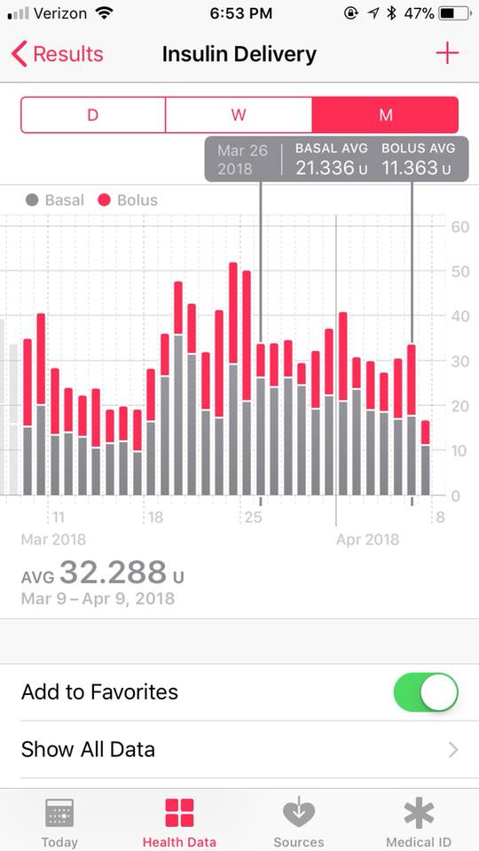

Health App⌁
Loop uses the iPhone's HealthKit to store blood glucose, insulin, and carbohydrate data. You can check your HealthKit settings for Loop by opening the Health App, clicking on Sources at the bottom bar, and then clicking on the Loop app.

Summaries of your carbohydrates, insulin, and blood glucose results can be found by clicking on the Health Data at the bottom bar, and then selecting either the large Nutrition box (for carbohydrates) or smaller Results line (for insulin deliveries and blood glucose results).

If you toggle on the "add to favorites" slider for the individual data categories (insulin, blood glucose, carbohydrates), the data from those categories will be added to your Today view for easy quick reference and access.

The summary data for the categories can help you follow monthly trends, help identify periods of insulin sensitivity/resistance, evaluate total daily insulin use, breakdown of basal vs bolus insulin, and carbohydrate consumptions. You can sort your data trends by day, week, month, or year views and scroll back through time in each of those data trends. You can even quickly use these data for endocrinology appointments discussions...as they provide the endocrinologist with a very quick and useful set of data points directly from your Loop.

If you drag two fingers separately, like you are spreading them apart, you can get averages for the data set your fingers are covering, as shown below.
